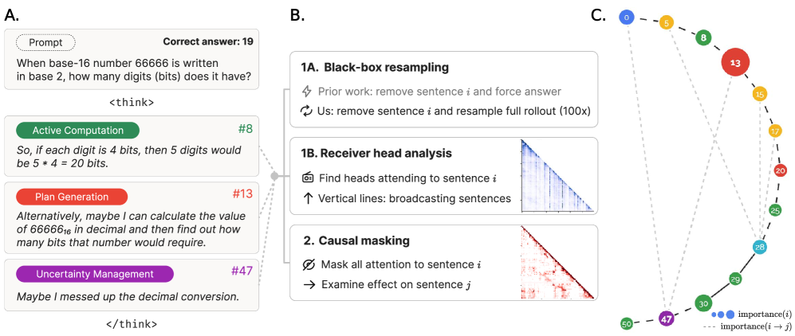
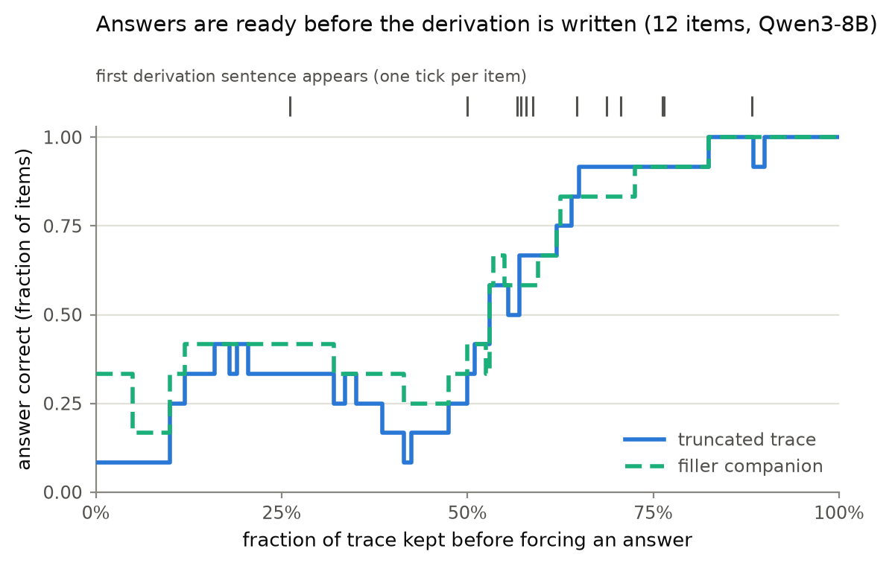
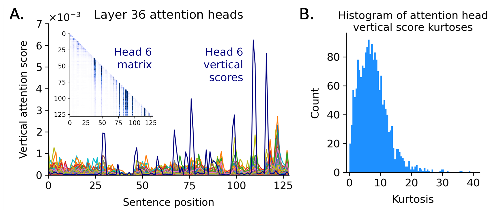

The previous post built an instrument for scoring what attention heads write, and closed on a discipline: validate against planted ground truth before trusting. Validation had a surprise waiting. The model we pointed the instrument at barely does its combining on the direct-answer surface at all: ask it to merge two facts without letting it think and it mostly fails; let it think and it mostly succeeds. The combining lives in the reasoning trace. This post follows it there.
When a reasoning model writes out its steps before answering, it looks like it is showing its work. Ask a model a question, turn on its thinking mode, and it produces a block of text: restating facts, trying an approach, correcting itself, arriving at a number, then answering. The natural reading is that this text is where the answer gets computed, that the model writes an intermediate result and reads it back later, the way a person works a problem on scratch paper.
We ran an experiment that tests whether that reading is literally true, for a small reasoning model answering questions that require combining two facts from its context. The answer came back no. But it came back no in a way that is stranger and more useful than a plain no, and the rest of this post walks the design so you can predict the result before you see it, the same path we took to find it.
The setup: a task that needs one step of synthesis
Qwen3-8B is an 8-billion-parameter model that can run with its thinking mode on or off. We gave it short passages containing two separate facts, then asked a question that only resolves by combining them: not “what is fact A”, but something that needs fact A and fact B put together in one step.
Turn thinking off and the model gets 5 of 16 of these combination questions right. Turn thinking on and it gets 31 of 32 (the same 16 question pairs, scored on both a plain-recall half and a combination half). The gap is not subtle: whatever synthesis this model does here lives almost entirely inside the reasoning trace.
That raises the actual question this post is about. Not “does thinking help” (it obviously does), but: how does it help? What is the trace actually doing?
Two stories, both predicting the same headline result
There are two different mechanisms that would both produce “thinking on beats thinking off”, and they make opposite predictions about what happens if you interfere with the trace text itself.
- The trace is working memory. The model computes an intermediate value, writes it down as tokens, and reads those tokens back to produce the final answer. The written content matters causally: remove it, and the information is gone.
- The trace is narration. Generating tokens buys the model more sequential compute, more forward passes chained together, regardless of what those tokens say. The text is a report of work happening elsewhere; the mechanism is the number of steps, not the content of the steps.
The second story has a real basis in how transformers compute. A transformer behaves architecturally like a Turing machine with an append-only tape that gets read in full at every step, where each step is one fixed-depth forward pass. Merrill and Sabharwal’s analysis of chain-of-thought expressivity makes the mechanism explicit: appending tokens is how a fixed-depth model buys itself serial depth it would not otherwise have. On that account, thinking helps even if the tokens carried no information at all, purely because more of them means more sequential computation.
Both stories predict exactly what we saw: thinking on beats thinking off. Neither is distinguishable from the headline number alone.
Stop and think: if you had to design one intervention on the trace that forces these two stories apart, what would you cut, and what would you compare it against?
The reader’s first trap: deleting text changes two things at once
The obvious move is to delete part of the trace and see if the answer breaks. Here is the trap: deleting trace text changes two things at once. It removes content, and it shortens how many generation steps happen before the answer. If accuracy drops after a cut, you cannot tell which of the two you just removed.
The fix, borrowed directly from Lanham et al.’s faithfulness methodology, is discipline rather than cleverness: every cut needs a length-matched filler companion. Delete a sentence, and also run a version where that sentence is replaced by neutral filler of the same token length. If the real cut and the filler cut behave the same way, position explains the effect. If they diverge, content does.
The arms, and the numbers, locked in before we looked
All the numbers below are read over 12 question pairs, out of 16 total, that passed a pre-registered filter: each pair had to already answer correctly with its full reasoning trace and fail with no trace at all, so only pairs where the trace was doing real work count. A small sample, stated honestly as small.
We took one sampled reasoning trace per question, frozen, and ran every intervention against that same frozen trace, so a difference between interventions reflects the intervention and not re-sampling noise. Before running anything, we wrote down the bars a result would need to clear: a working-memory story needed accuracy to collapse to 0.3 or below once the derivation is masked, and 0.7 or above would count as evidence against it. Locking the bars first matters: a number like 0.83 can be told two opposite stories depending on which way you were already leaning, and fixing the threshold before the data exists removes that choice from hindsight.
Masking every restatement of the derivation. Not just one sentence: the model tends to re-derive its own intermediate result more than once across a trace (“wait, let me check that again”), so a single cut gets absorbed by its own redundant siblings. We masked every sentence that stated the derived value, using the causal attention-suppression technique from Thought Anchors (block every downstream token’s attention to the target sentences, across all layers and heads). Correctness on the combination questions: 0.83 (bootstrap CI [0.58, 1.00], wide given how few questions this covers). A KL-divergence readout on the downstream tokens (averaging 5.2) confirms the mask is not inert: it measurably perturbs generation. It does not stop the model reaching the right answer.

How a reasoning trace becomes an experimental surface: label the sentences, then intervene on them. The bottom box of panel B is the exact move our masking arms use: block every downstream token’s attention to a target sentence and read the effect on what follows. Figure 1 of Thought Anchors (CC BY 4.0).A truncation ladder, with a filler-matched twin. We truncated the trace at increasing points and forced an answer from each truncation point, tracking where the derivation sentence sits on that ladder. On three quarters of the used questions, the answer is already correct before the derivation sentence is even reached. As the control, we ran a second ladder where the truncated remainder is replaced by content-free filler of matched length instead of being cut outright. That filler ladder crosses to correct early too, on 0.83 of questions, meaning the crossing point tracks how many generation steps have elapsed, not whether the derivation has actually appeared.

Both ladders climb together, and before the derivation. Fraction of items answering correctly against how much of the frozen trace is kept; the ticks along the top mark where each item’s first derivation sentence appears (median: 62 percent of the trace). The filler companion tracks the truncated trace nearly point for point, so the crossing follows runway length, not derivation content. Our run data, 12 used items.A random-sentence control. As a check on the masking mechanic itself, rather than blocking derivation sentences, we blocked the same number of sentences chosen at random from elsewhere in the trace. This is the guard against a false positive where masking anything at all collapses the answer, which would make the derivation look causally important for no interesting reason. Correctness under the random mask: 1.00. The masking mechanic itself is not what breaks the answer.
Corrupting the derivation. Rather than remove the derivation, we replaced every restatement of it with the same, single, wrong value, forcing the rest of the trace to work from a false premise. The model follows the corrupted value into its final answer on 0.92 of questions (95 percent CI roughly 0.75 to 1.00). A matched negative control, corrupting an unrelated placeholder sentence instead of the derivation, is followed 0.00 of the time and ignored 1.00 of the time, so the mechanic itself behaves cleanly.
The reader’s second trap: what does 0.83 actually mean
Before reading on: does 0.83 mean the trace matters a little, or that it barely matters at all? Read quickly, “masking dropped correctness to 83 percent” sounds like “so the trace still matters somewhat.” That reading is upside down.
The used questions were filtered to be correct by construction when the trace is intact and incorrect when there is no trace at all, so the baseline for these items, before any masking, is 1.00, not some unknown starting point. 0.83 does not mean masking pushed accuracy down from a higher number. It means the answer survived losing the entire derivation on 83 percent of items that could not be answered correctly without a trace in the first place.
That is exactly why the bars were fixed before the run: 0.83 sits well above the 0.7 line that was pre-registered as evidence against the working-memory story, and nobody had to decide, after seeing the number, which way it cut.
The verdict: refuted, with a twist
Trace-as-working-memory is refuted, for this task and this model. The answer is carried by the forward pass over more than one redundant path back to the original facts. Two results point the same way: removing the fact from the context and removing its restatement in the trace each, on their own, leave correctness intact across all 12 used question pairs. The model can recompute the answer from either copy alone. The written derivation is not the sole channel; it is one of several the model can fall back to.
The interesting part is what happens when the trace is wrong instead of absent. The trace is a trusted input, even though it is not a necessary one. The model does not need its own written notes; it can recompute fine without them on the large majority of these items. But when the notes state a specific wrong value, the model follows that value into its answer on 92 percent of items, overriding a recomputation it can demonstrably perform correctly. Causal authority without causal necessity: it believes the note over its own arithmetic.
Scope: a map of a boundary, not a general law
This holds for one 8-billion-parameter model, on questions requiring exactly one step of synthesis. A quarter of the used questions did need the trace to reach the derivation rung before answering correctly, so the finding is not “the trace never matters”, it is “the trace does not matter on most of these items, at this depth.” A three-seed check on a handful of items found the masking result stable across different sampled traces (moving by at most one item out of three across reseeds), so 0.83 is not an artifact of one particular sampled trace.
Lanham et al. found trace-dependence varies by task and shrinks further with model scale on some tasks. And the theory behind the narration story only guarantees that extra tokens buy extra sequential depth; it says nothing about whether the written content matters causally on any particular task. On a problem that needs more composition steps than tested here, a single forward pass’s fixed depth eventually runs out, and the trace may have to carry real content since no other channel remains. Whether that is true is empirical per task, not settled by this result. This is a map of where one boundary sits, not a law about reasoning traces in general.
Three doors this opens
Faithfulness reads differently if the trace has authority without necessity. If the trace narrates a computation happening elsewhere but the model still trusts whatever the trace says, then reading a trace tells you what the model will act on, not how it actually arrived at the answer. That distinction matters directly for the faithfulness literature, including recent benchmarking work like FaithCoT-Bench.
A trusted-but-unnecessary channel is a working steering handle. Ninety-two percent follow-through on a corrupted derivation, against a clean control, is a real intervention surface: write the value you want into the trace, and the model tends to adopt it, whether or not it needed the trace to get there in the first place.
This bears on the case for latent, non-token reasoning. Designs like COCONUT replace the written trace with continuous latent iterations, aiming to get the extra sequential compute without paying for it in tokens. The standard objection is that you lose the interpretable trace. That objection weakens if the trace is mostly narration to begin with. But the trusted-input channel this result surfaces is exactly what a latent design gives up: there is no longer a note the model can trust or distrust, correctly or otherwise. The open question is where the serial computation has to live: in tokens you can read and edit, or in latent iterations you cannot.

A receiver head at work: a few sentences in a reasoning trace draw outsized attention from everything downstream (the spikes, and the dark vertical stripes in the inset matrix). Trace-internal structure like this is why trace-side instruments have become the standard tool for these questions. Figure 4 of Thought Anchors (CC BY 4.0).The shape of the answer
We asked whether the model reads its own thinking trace, and the answer refused to be a yes or a no. It does not need the trace: the answer is carried by the forward pass, over redundant paths back to the original facts. It does trust the trace: write a value into it and the model adopts it against a computation it performs correctly on its own. “Showing its work” turns out to be the wrong frame entirely. The trace is closer to a briefing the model writes for itself and then believes.
Neither the plain answer surface nor the trace surface, on its own, tells you whether a model actually combined two facts or landed on the right answer by another route. That gap, between what a trace shows and what a model does, is where measurement work has to live.
References.
- Lanham et al., “Measuring Faithfulness in Chain-of-Thought Reasoning,” arXiv 2307.13702.
- Bogdan et al., “Thought Anchors: Which LLM Reasoning Steps Matter?”, arXiv 2506.19143.
- Merrill, Sabharwal, “The Expressive Power of Transformers with Chain of Thought,” arXiv 2310.07923.
- Hao et al., “Training Large Language Models to Reason in a Continuous Latent Space” (COCONUT), arXiv 2412.06769.
- Shen et al., “FaithCoT-Bench: Benchmarking Instance-Level Faithfulness of Chain-of-Thought Reasoning,” arXiv 2510.04040.
- Qwen Team, “Qwen3 Technical Report,” arXiv 2505.09388.